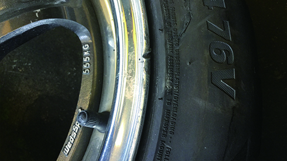

タイヤカルテとは
タイヤの画像と残溝などのタイヤの状態を管理するシステムです。
タイヤパークWEB管理システムと連携してタイヤ情報を管理できます。
タイヤカルテを活用することでタイヤ製品の販促活動、タイヤ履き替えシーズンの作業軽減などの
効果が期待できます。
- ※タイヤ情報をシステム管理することで、お客様の来店前に、タイヤ製品の買い替えの提案を可能とします。保存されたタイヤの画像は参考資料として活用できます。
- ※カルテはお客様の来店時にタイヤの状態を一目でお知らせできます。

- ※お依頼時に不良タイヤは注意喚起されます。
- ※オフシーズン時に不良タイヤのリストを作成することができます。タイヤ製品の購入計画を立てることができます。
- ※不良タイヤのリストをもとにオフシーズン時にタイヤ製品の購入計画を立てることができます。
またお客様にタイヤの買い替えを勧めるダイレクトメールを送付するなどの営業活動ができます。
- ※タイヤ情報はタイヤ取扱業者様で入力・管理することができます。ピットで直接タブレットに入力することができ、紙の管理が不要です。
- ※タイヤの測定を倉庫業者に委託することで、タイヤの履き替え時期の作業を大幅に軽減することができます。
- ※タイヤ情報や画像を保存していくことで傷がついたなどの保管トラブルを避けることができます。
ご利用方法
1まずは、タイヤパークweb管理システムにログイン
2メニューバーのタイヤカルテをクリック

注意事項
- ※倉庫業者に依頼をする場合は別途測定委託料が発生いたします。
- ※タイヤカルテを利用する場合は、システムの画面に表示される注意書の内容に同意する必要があります。地域により倉庫業者に測定を依頼できない場合があります。
- ※地域により倉庫業者に測定を依頼できない場合があります。
- ※タイヤカルテは無料でご利用いただけますが、お電話・メール等のお問い合わせには対応しておりません。利用方法については、ユーザーマニュアルをご参照ください。
タイヤカルテマイスター認定制度
タイヤの測定に必要な知識を持つ人材を育成し、認定する制度です。
マイスター取得希望者には専門家による一定時間の講習を実施いたします。タイヤの基礎から学習し、タイヤ測定の知識・技術を習得します。
タイヤの安全性を最終判断する整備士に、各倉庫業者のマイスターが適切な情報を提供します。法改正の案内、タイヤ業界の情報などを「タイヤカルテマイスター」向けに随時配信することで、タイヤ管理の品質管理向上及び知識維持を目指します。

タイヤカルテで登録・管理ができる項目(抜粋)
- セット単位の総合判定
- タイヤごとの記録情報
タイヤ交換判定、点検日実施、タイヤ種別、ホイールタイプ、経過年数による判定、充填空気圧確認、パンク点検等
タイヤサイズ、製造年／セリアル、製造メーカー、パターン、残溝／PH残溝、偏摩耗、エア漏れ、ひび割れ、ホイール腐食、傷・セパレーション、異物刺さり、ナット座摩減、コメント、タイヤの画像（1本のタイヤに対して3枚保存が可能）等
